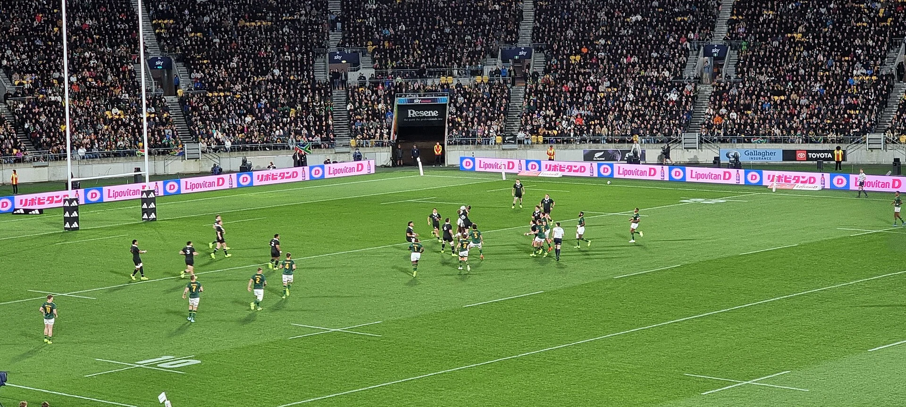
SOUTH AFRICA /RSAGREEN. GOLD.
Wellington, 2025 / JaumeBG / CC BY-SA 4.0GREEN. GOLD.
UNBREAKABLE.
World Cup winners in 1995, 2007, 2019 and 2023. South Africa’s Springboks wear green and gold.
THE TEAMSPRINGBOKS
Match predictions, expected scorelines and the rugby behind the numbers.
Club rugby, international traditions and the matches that bring supporters together.
Meet the nations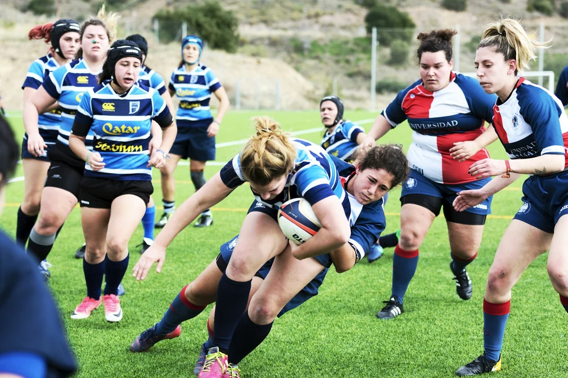
THIS IS OUR GAME.A club match in Málaga. Rugby starts with players turning up for each other.
Photo: Quino Al / Unsplash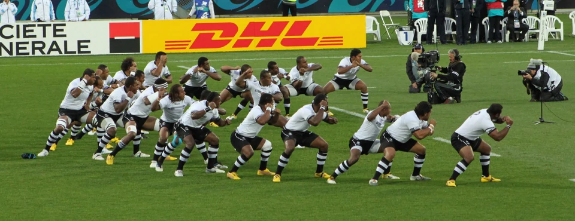
Fiji perform the Cibi before facing South Africa at the 2011 Rugby World Cup.
Photo: Craig Boyd / CC BY-SA 2.0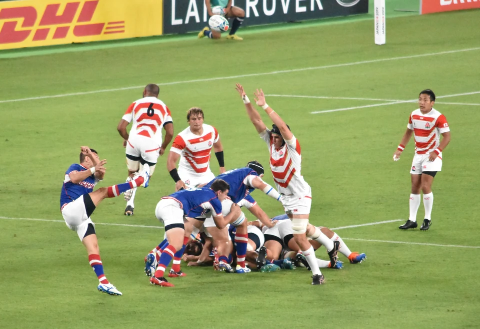
Japan and Russia meet in Tokyo at the 2019 Rugby World Cup.
Photo: 江戸村のとくぞう / CC BY-SA 4.0Choose a nation to explore the teams, colours and traditions of test rugby.

World Cup winners in 1995, 2007, 2019 and 2023. South Africa’s Springboks wear green and gold.
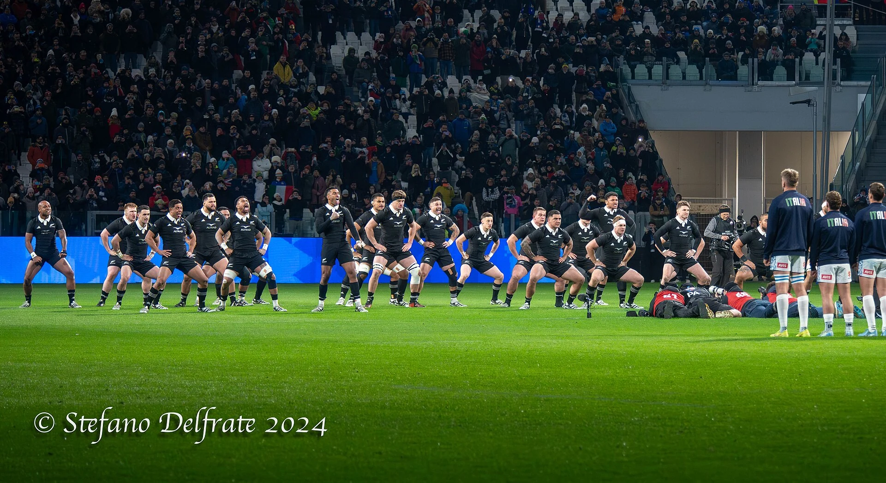
World Cup winners in 1987, 2011 and 2015. New Zealand’s All Blacks carry the silver fern.
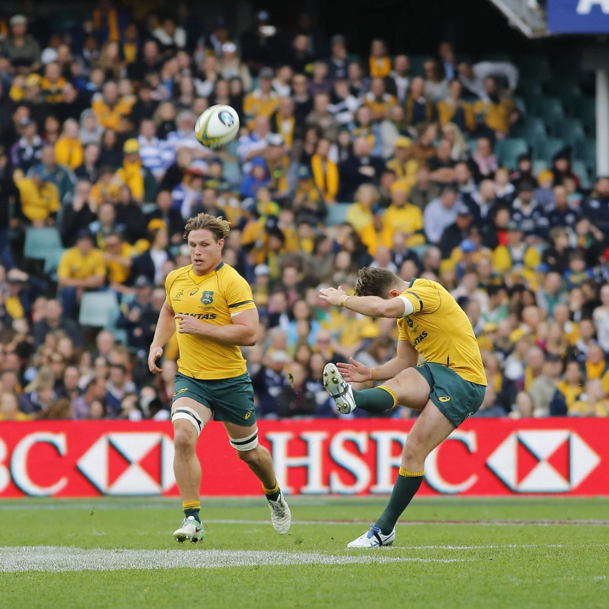
Australia’s Wallabies won the Rugby World Cup in 1991 and 1999.
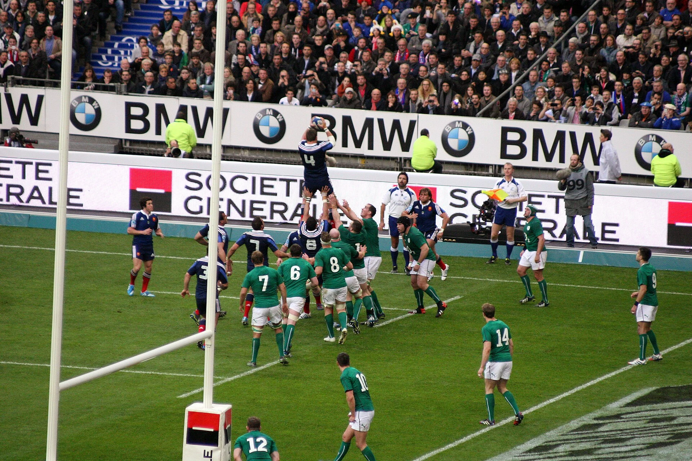
Ireland and France contest a lineout at the Stade de France in this Six Nations photograph.
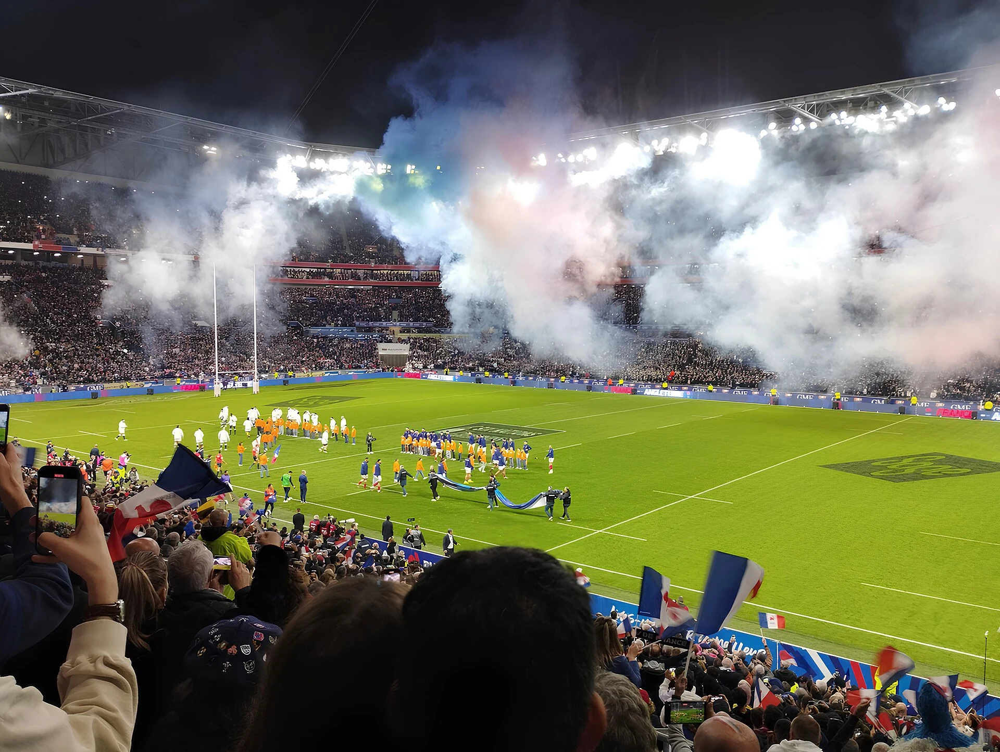
Les Bleus take the field in Lyon alongside England for their 2024 Six Nations meeting.
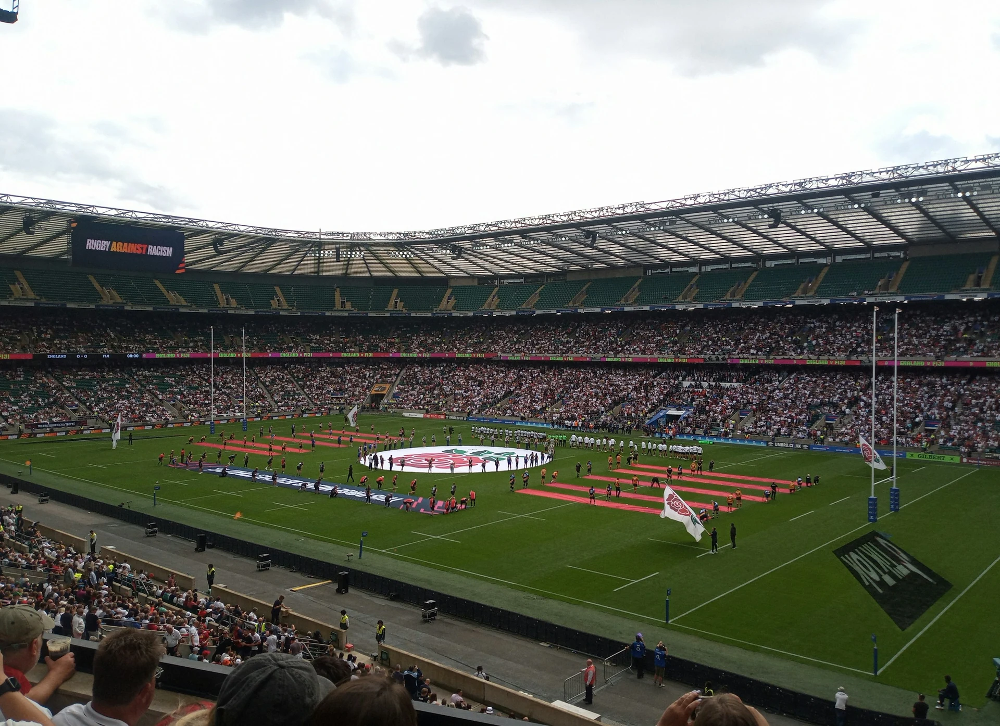
The home of England rugby. A view across the pitch and stands at Twickenham.
Snapshot · 31 August 2026
Historical snapshot · View current rankings ↗
A try, a kick, a change of lead. Build a scoreline and see how rugby union’s points add up.
A conversion is available to the side that just scored a try.
Explore international, club and provincial rugby. Filter the list to find your competition.
Compare fixture probabilities and predicted scorelines before kickoff. Open a card below for a guide to reading the predictions.
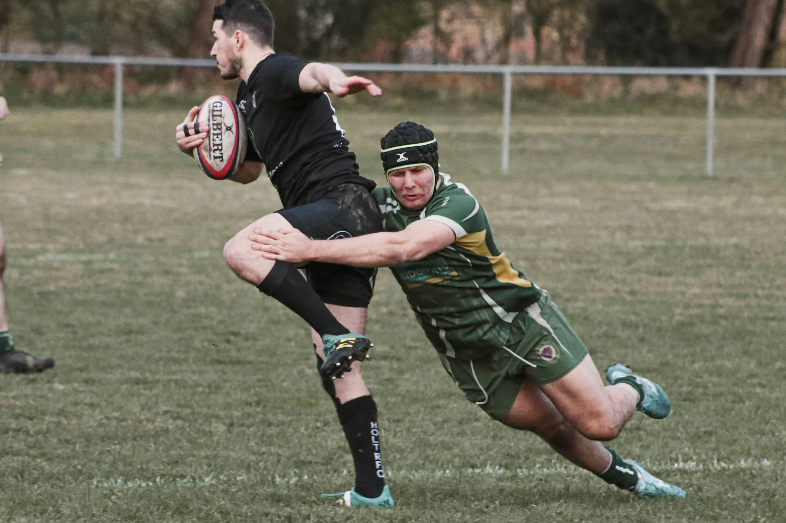
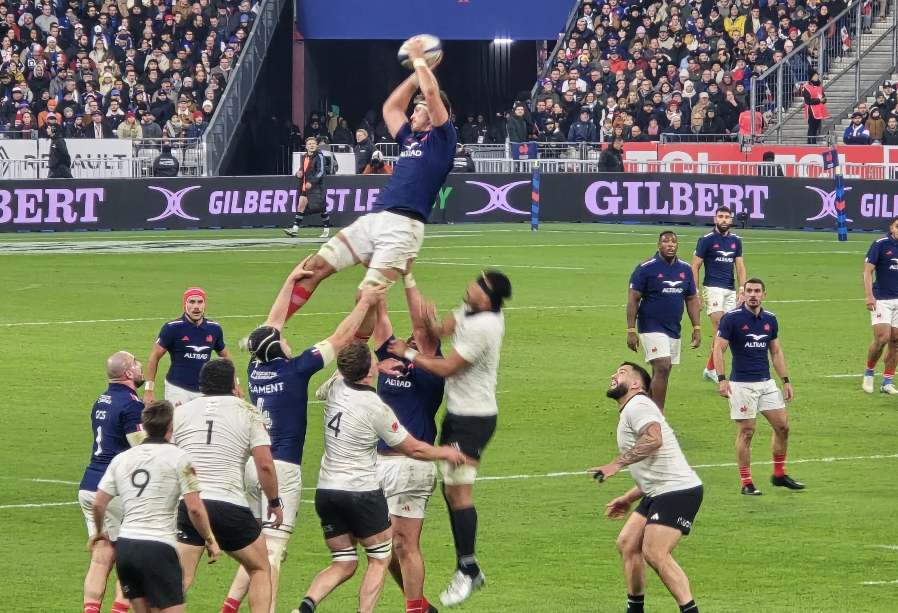
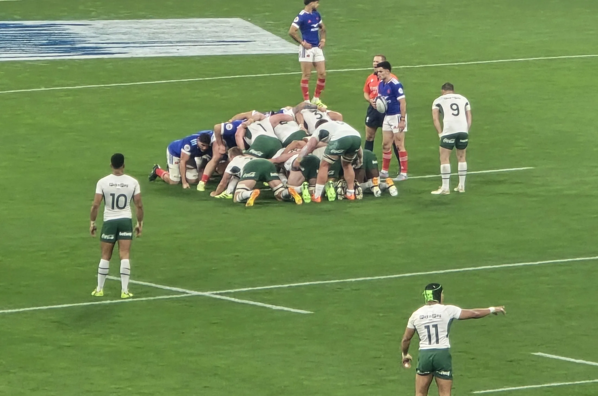
Read the estimated chance of each outcome.
Read moreClose+A probability describes uncertainty. A favoured team can still lose; compare the outcomes rather than treating the highest number as a certainty.
Compare the predicted scores for both teams.
Read moreClose+Subtract one predicted score from the other to read the expected margin. The scoreline is an estimate, not an exact result.
Put a fixture in the context of past results.
Read moreClose+Historical scores provide context for a prediction. They do not capture everything that can change between matches.
Use the prediction alongside your own judgement.
Read moreClose+Consider what you know about the fixture. Predictions are for analysis and entertainment; the match still has to be played.
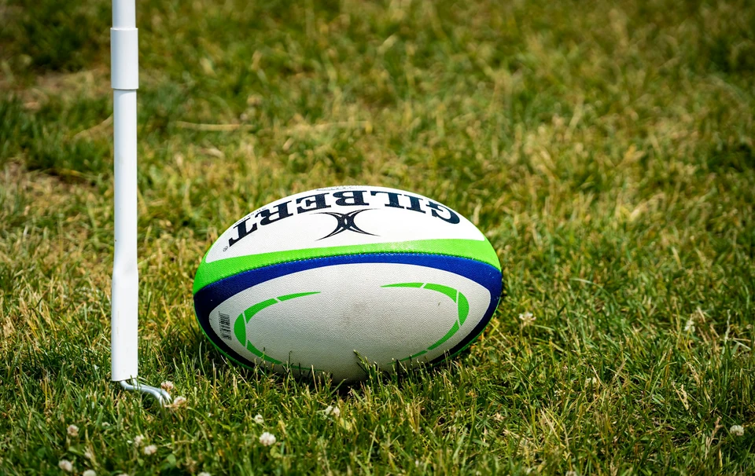
Rugby AI Predictor uses historical match results to estimate outcomes and scorelines. Compare the prediction with your own reading of the fixture, and keep the uncertainty in view.
A prediction is an estimate.Find your season pass
The result is decided on the pitch.
Historic photographs and milestones from rugby’s past.
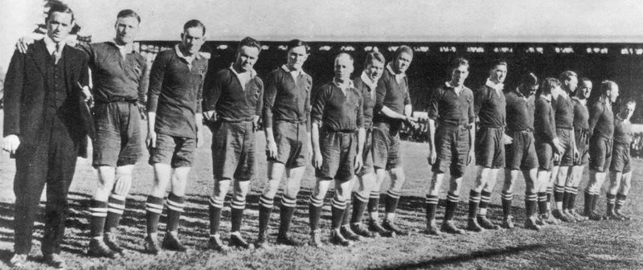
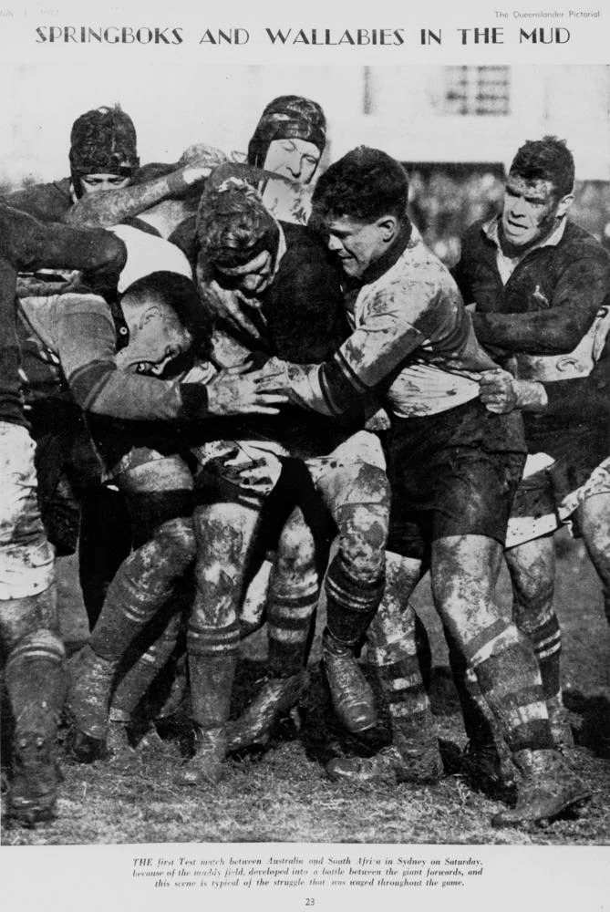
Scotland and England play rugby union’s first recognised international.
New Zealand’s northern tour establishes the All Blacks on the world stage.
South Africa’s touring side adopts the name that becomes a global rugby identity.
New Zealand wins the inaugural men’s Rugby World Cup at Eden Park.
The first Women’s Rugby World Cup is played in Wales.
South Africa wins at home in one of sport’s defining cultural moments.
Australia becomes the first nation to win two men’s Rugby World Cups.
South Africa becomes the first men’s nation to claim a fourth world title.
The Nations Championship begins a new cross-hemisphere test era.
The inaugural championship connects the July and November test windows: six European nations face South Africa, New Zealand, Australia, Argentina, Fiji and Japan before every team meets in London for Finals Weekend.
Choose monthly, six-month or annual access. Prices are shown in US dollars.
7-day money-back guarantee · Licence key delivered by email
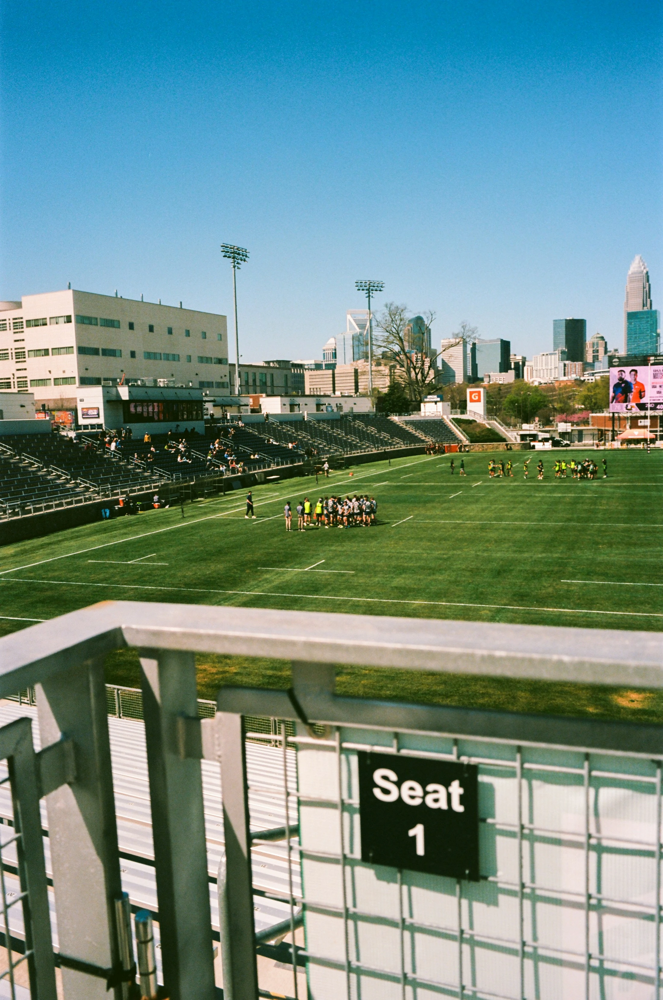
Subscription, privacy and refunds. The rules of the pass, written so you can read them before you join.
How the predictor works, and what you agree to.
By accessing and using the Rugby AI Predictor service ("Service"), you accept and agree to be bound by the terms and provision of this agreement. If you do not agree to abide by the above, please do not use this service.
Rugby AI Predictor provides AI-powered match predictions, analytics, and statistical insights for rugby matches. The Service uses machine learning algorithms to analyze historical data and generate predictions. All predictions are for informational and entertainment purposes only.
We offer various subscription plans (monthly, 6-month, and yearly). Subscription fees are charged in advance and are non-refundable except as required by law or as specified in our Refund Policy.
Upon successful payment, you will receive a unique license key via email. This license key grants you access to premium features for the duration of your subscription. License keys are:
You may use the Service for:
You agree NOT to:
All predictions provided by the Service are generated using AI algorithms and historical data analysis. We make no guarantees regarding the accuracy of predictions. Predictions are:
You acknowledge that sports outcomes are unpredictable and that past performance does not guarantee future results. You use predictions at your own risk.
All content, features, and functionality of the Service, including but not limited to text, graphics, logos, algorithms, and software, are the property of Rugby AI Predictor and are protected by international copyright, trademark, and other intellectual property laws.
You may not reproduce, distribute, modify, or create derivative works of any content from the Service without express written permission.
We reserve the right to terminate or suspend your access to the Service immediately, without prior notice, for any breach of these Terms of Service. Upon termination:
To the maximum extent permitted by law, Rugby AI Predictor shall not be liable for any indirect, incidental, special, consequential, or punitive damages, or any loss of profits or revenues, whether incurred directly or indirectly, or any loss of data, use, goodwill, or other intangible losses resulting from your use of the Service, any predictions provided, decisions made based on the Service, or unauthorized access to your data.
The Service is provided "as is" and "as available" without warranties of any kind, either express or implied, including but not limited to implied warranties of merchantability, fitness for a particular purpose, or non-infringement.
We reserve the right to modify these Terms of Service at any time. We will notify users of any material changes via email or through the Service. Your continued use of the Service after such modifications constitutes acceptance of the updated terms.
These Terms of Service shall be governed by and construed in accordance with the laws of the jurisdiction in which Rugby AI Predictor operates, without regard to its conflict of law provisions.
If you have any questions about these Terms of Service, please contact us through the Service or via the contact information provided in your subscription confirmation email.
What we collect, why we keep it, and how long it stays.
Rugby AI Predictor ("we," "our," or "us") is committed to protecting your privacy. This Privacy Policy explains how we collect, use, disclose, and safeguard your information when you use our Service.
We collect information that you provide directly to us, including:
When you use our Service, we may automatically collect device information, usage data, IP address, and cookies or similar tracking technologies.
We use the collected information to provide and improve our Service, process your subscription, deliver license keys, respond to inquiries, prevent security threats, analyze usage, and comply with legal obligations.
Your data is stored securely using industry-standard cloud infrastructure (Firebase/Google Cloud Platform). We use encryption in transit (HTTPS/TLS), secure authentication, regular audits and access controls. However, no method of transmission or storage is 100% secure and we cannot guarantee absolute security.
We do not sell, trade, or rent your personal information. We may share information only with trusted service providers, when required by law, to protect rights, or in connection with a business transfer.
We use cookies to remember preferences, analyze usage and provide personalized content. You can instruct your browser to refuse cookies, though some features may not work as a result.
Depending on your location, you may have rights to access, correct, delete, or port your personal information, and to opt out of marketing communications. Contact us to exercise these rights.
We retain your personal information for as long as necessary to provide the Service and fulfill the purposes outlined here, unless a longer retention period is required by law.
Our Service is not intended for individuals under the age of 18. We do not knowingly collect personal information from children.
Your information may be transferred to and processed in countries other than your country of residence. By using our Service, you consent to these transfers.
We may update this Privacy Policy from time to time and will post the new version with an updated date. Please review it periodically.
If you have questions about this Privacy Policy or our data practices, please contact us through the Service or via your subscription confirmation email.
Seven days to decide. After that, the pass stands.
This Refund Policy outlines the terms and conditions under which refunds may be issued for subscriptions to Rugby AI Predictor. Please read this policy carefully before making a purchase.
7-Day Money-Back Guarantee: We offer a 7-day money-back guarantee for all new subscriptions. If you are not satisfied within 7 days of your initial purchase, you may request a full refund.
Contact us using the email associated with your subscription and include your email, license key (if available), date of purchase, reason, and transaction ID. We will review and respond within 5-7 business days.
Once approved, refunds are processed within 5-10 business days to the original payment method. Upon approval, your license key is deactivated immediately and cannot be reactivated.
Cancellation stops future renewals but does not refund the current period. Refund returns your payment and deactivates your key. Cancellation takes effect at the end of your current billing period.
If you initiate a chargeback instead of contacting us, we may deactivate your license key, ban your account from future subscriptions, and challenge the chargeback. Please contact us first to resolve any issues.
For persistent technical issues we may consider a refund on a case-by-case basis even outside the guarantee period. If we discontinue the Service, we will provide prorated refunds for the unused portion.
Refunds are issued in the same currency and to the same payment method used for the original purchase.
We reserve the right to modify this Refund Policy at any time. For existing subscribers, the policy in effect at the time of purchase applies.
For any questions or to request a refund, contact us through the Service or via your subscription confirmation email.